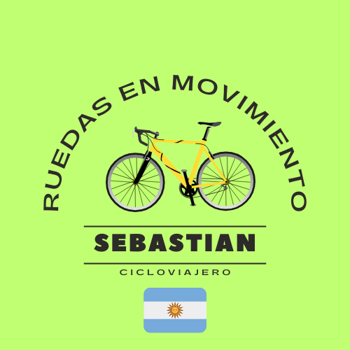

Ruedas en Movimientos
Soy un cicloviajero, y me gusta hacer viajes los fines de semana. Aquí subo fotos sobre mis salidas!
InstagramEstudiante de Ciencia de Datos en la Universidad Nacional de Guillermo Brown (UNAB)
Soy un cicloviajero, y me gusta hacer viajes los fines de semana. Aquí subo fotos sobre mis salidas!
Instagram